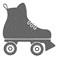
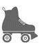
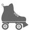

AVENGER FIELD
SWEETWATER, TEXAS
Cher Billy,
Pas une journée sans entraînement. J’ai vu un vrai Mexicain pour la première fois, et j’ai mangé mes premières tamales. Excellent. Je t’envoie un cendrier en forme de sombrero et une photo de moi en tenue d’aviatrice. Ils nous ont donné des uniformes d’homme – tellement grands qu’on ressemble aux zazous, façon Cab Calloway. Je suis toujours ton conseil et le mécano est mon meilleur ami. S’appelle Elroy Leefers et il s’occupe bien de moi. Tu me manques toujours. Bravo pour ta promotion ! Il va falloir que je te fasse le salut militaire, maintenant !
Fritzi
PS : La ville de Sweetwater nous a invitées (nous les filles) à un barbecue. C’était sensass. Ces Texans ont un don pour l’amitié.
AVENGER FIELD
SWEETWATER, TEXAS
Mon petit Billy,
Je me prenais pour une dure à cuire, mais tu peux me traiter de poule mouillée. Hier, avec Willy, on n’avait pas décollé depuis cinq minutes que j’ai aperçu le plus gros serpent à sonnette de ma vie. Il devait dormir dans un compartiment, sur le côté, et les vibrations de l’avion n’ont pas tardé à le réveiller.
On se demande toujours quel courage on aura face au danger. J’ai fait des sorties de vrille, j’ai dansé par grand vent sur les ailes d’un avion, et des tas de trucs… Mais là, Billy, quand cette bestiole s’est approchée de moi, je me suis raidie comme un cadavre. Ma tête me disait de sauter, de bouger, de faire quelque chose… pourtant je suis restée immobile avec des yeux grands comme des soucoupes. En se tournant vers moi, Willy a vu le serpent. Calmement elle a tendu le bras, l’a attrapé par la queue et elle l’a projeté au-dehors de toutes ses forces. J’ai jeté un coup d’œil vers elle en retrouvant mon souffle : on aurait dit que rien ne s’était passé. Willy me regarde et se met à rire. Elle n’avait encore jamais vu quelqu’un littéralement vert de peur. Pour me rassurer, elle dit aussi que j’ai eu raison de ne pas bouger. Comme si j’avais fait exprès ! Je l’aurais fait si j’avais pu. Sacrée bonne femme. C’est mon héros (mais je le garde pour moi).
Fritzi
PS : Je suppose que le serpent était surpris d’apprendre à voler.
AVENGER FIELD
SWEETWATER, TEXAS
Mon petit Billy,
Tes nouvelles se font rares. J’espère que tu envoies des gars bien formés voler à l’autre bout de l’Atlantique. Ici on n’a pas une minute. Tu te rappelles ces filles dont je t’ai parlé, celles qui ont fait des études ? Eh bien, je retire ce que j’ai dit. Je les connais mieux et je m’aperçois que c’est des filles bien. Et elles en ont. Bossent dur, pilotent comme des as, ne se plaignent jamais. Elles peuvent se mesurer aux meilleurs. C’est pas bizarre, cette guerre ? J’habite dans une caserne et je pilote des avions avec des femmes que je n’aurais jamais eu l’occasion de rencontrer autrement. Je m’étais trompée en les traitant de snobs, parfois c’est moi qui ai des œillères. Ça m’arrive aussi… Bon, enfin, après quelques verres, j’ai craché le morceau. Je leur ai dit que Phillips est le nom de notre station-service à Pulaski, où les frangines Jurdabralinski ont décroché leurs licences de mécano. Non seulement elles se sont bien marrées, mais elles ont voulu en savoir plus. Ça les intéressait drôlement, figure-toi. Va comprendre… Je crois que la guerre est capable de changer les mentalités. Déjà, moi, j’ai changé. Je ne vois plus les choses comme avant. Bon, allez, dodo. Prends soin de toi, petit Billy, et je ne désespère pas qu’on m’envoie près de toi. Même si on n’avait qu’une nuit, ça serait une belle nuit.
Moi
PS : Paraît-il qu’à Pensacola, vous êtes mille hommes pour une seule femme. Pas étonnant que je te manque. Malheureusement, ici, c’est l’inverse qui est vrai. Cinq cents bonshommes pour une fille. Ah, ça, des cavaliers, on en a. Mais t’inquiète, je suis sage. Aussi sage que possible.
ALLÔ, ALICE ?
POINT
CLEAR, ALABAMA
Après avoir donné à manger aux oiseaux – les geais bleus surtout –, Sookie s’était occupée un instant du jardin avant que le soleil monte trop haut dans le ciel. Le mois d’août était redoutable ; à huit heures du matin, il faisait déjà tellement chaud et humide, dehors, qu’on se retrouvait trempé en un rien de temps. C’était lundi, et Sookie voulait faire en vitesse ses courses de la semaine au Walmart, histoire de s’en débarrasser.
Elle venait de sortir de la baignoire quand le téléphone sonna dans sa chambre. Lenore tenait réunion avec son club de jardinage, donc c’était certainement Netta. Qui lui demandait souvent, le lundi, de lui prendre quelque chose au supermarché. Sookie s’enveloppa d’une serviette et courut répondre.
– Allô ?
– Alice ?
– Pardon ?
– Excusez-moi, je cherche à joindre Alice Finch.
Sookie reconnut brusquement la voix.
– Ah oui, oui ! C’est bien moi, dit-elle.
– Je vous appelle du Wisconsin. Marian, à la chambre de commerce, vous vous rappelez ? Vous vouliez des informations au sujet des Jurdabralinski. J’attendais un autre coup de fil de votre part, mais bon. Alors j’ai retrouvé votre numéro sur la facture du téléphone. C’est quel indicatif, le 251 ?
– La Georgie, répondit Sookie, affolée.
Elle se rendit compte aussitôt que c’était un mensonge stupide, mais… trop tard.
– Écoutez, j’ai vos renseignements, chère madame. Des tas de choses intéressantes sur cette famille. Maman dit que trois des filles Jurdabralinski étaient des WASP.
– Des WASP ?
– Oui, pas banal, hein ?
– Mais je croyais qu’elles étaient catholiques ?
– Catholiques, oui, mais WASP 13 veut dire autre chose, vous savez, ces femmes pilotes pendant la Deuxième Guerre mondiale ?
– Des femmes pilotes ?
– Absolument. Selon maman, les journaux ont beaucoup parlé d’elles, à l’époque. Elles faisaient un numéro, ça s’appelait le Cirque volant des sœurs Jurdabralinski de Pulaski. Trois des filles ont servi sous les drapeaux, et l’une d’elles a trouvé la mort… eh bien, dans un accident d’avion.
– Mon Dieu.
– Oui, oui. Elle a été enterrée en grande pompe à la cathédrale, comme une héroïne nationale.
Sookie eut un coup au cœur.
– Laquelle était-ce ? Celle qui s’appelait Fritzi ?
– Attendez, j’ai recopié tout ça. Voyons…
Le cœur de Sookie battait de plus en plus fort.
– Ah, voilà. Non, ce n’est pas elle. C’était une autre des sœurs.
Sookie se sentit curieusement soulagée.
– Mais sur Fritzi, vous savez quelque chose, peut-être ? Qu’est-elle devenue ?
– Une seconde, je demande à maman. Elle est à côté de moi. Maman, tu te souviens de Fritzi Jurdabralinski ?
Sookie entendit un murmure en arrière-fond.
– OK, maman dit qu’elle a déménagé il y a des années. Quelque part en Californie.
– En Californie, où ça ?
– Une seconde. Maman ! Où ça, en Californie ? Ah, elle ne se rappelle pas précisément, mais c’est une ville danoise.
– Une ville danoise ?
– Maman, une ville danoise ? Oui, elle dit qu’elle avait reçu une carte postale dans les années 50, avec des moulins à vent.
– Je vois. Votre mère sait-elle si Fritzi est toujours vivante ?
– Elle est toujours vivante, maman ?
D’autres murmures en arrière-fond.
– Elle pense que oui, dit Marian. Sinon, elle l’aurait vu dans le journal. Maman lit tous les avis de décès. Mais j’ai quelque chose d’autre qui vous intéressera. Les deux jumelles ont eu leur heure de célébrité, dans la région. Elles jouaient de l’accordéon et composaient des chansons. Des polkas, et plutôt bonnes, comme I’m Too Fat for Polka, ou The Wink-a-Dink Polka 14, et quantité d’autres. Je vous trouverai une liste. On a plein de journaux aux archives, je vous ferai un paquet et je vous enverrai ce qu’on a là-dessus.
– Oh, ça serait génial.
– D’accord, je m’en occupe. Donnez-moi votre adresse, chère madame.
Ah, zut, Sookie était prise au piège.
– Euh… Eh bien, Alice Finch, c/o Mme Earle Poole, 526 Bay Street, Point Clear, Alabama.
– Tiens. Je croyais que vous habitiez en Georgie ?
– Oui, juste de l’autre côté de la frontière, et on me livre le courrier en Alabama.
– Bon, très bien. Je vous emballe tout ça dès que possible. À bientôt, Alice.
– Mille mercis, Marian. À bientôt.
En raccrochant, Sookie remarqua que ses mains tremblaient. Marian parlait de sa vraie famille, de sa mère génétique, et tout cela paraissait encore irréel, effrayant. Sookie n’aurait jamais cru que des femmes pilotaient des avions pendant la Deuxième Guerre. Pour elle, il n’y avait eu que des hommes.
Le téléphone sonna de nouveau, et elle décrocha. Cette fois, c’était bien Netta.
– Tu vas au Walmart, ce matin ?
– Dans une minute.
– Tu pourrais me prendre des Kleenex et un pack de Dr Pepper, s’il te plaît ?
– Mais oui.
– Et une livre de crevettes surgelées, si tu reviens tout de suite.
– Oui, aussitôt, ne t’inquiète pas.
– Ça va ? Tu as une drôle de voix.
– Non, tout va bien. Dis donc, tu savais qui c’était, les WASP ?
– Quels WASP ?
– Ces femmes qui pilotaient des avions pendant la guerre.
Netta pensa intérieurement : « Ça y est, c’est reparti. »
– Non, je n’étais pas au courant.
– Moi non plus, je viens de l’apprendre. C’est intéressant, non ?
– Euh… Oui, sûrement.
– Tu connais une ville en Californie où habitent des Danois, avec des moulins à vent ?
– Pas du tout, ma chérie.
Netta était de nouveau inquiète. Elle aurait bien cru que Sookie allait mieux, mais elle en doutait maintenant.
Tout en poussant son caddie à Walmart, Sookie demanda à d’autres clientes si elles avaient entendu parler des WASP, et la réponse était non. Seul M. Lennon crut se rappeler quelque chose. Mais bon, il avait quatre-vingt-douze ans et n’était sûr de rien. Sookie avait hâte d’en parler, ce soir, avec Earle.
À peine avait-il franchi la porte qu’elle le mit au courant.
– Earle, c’est incroyable ! Je viens d’apprendre que ma mère pilotait des avions pendant la guerre. Dans un bataillon de femmes qui s’appelaient les WASP !
– Comment ?
– C’est ce que m’a dit la fille de la chambre de commerce, dans le Wisconsin. Et mes tantes étaient pilotes, elles aussi.
– Non, attends. Recommence doucement depuis le début.
– Ma mère faisait partie des WASP. Comme les WAC, mais dans l’armée de l’air. Ça te dit quelque chose ?
– Rien. Je connaissais les WAC 15 et les WAVES 16, mais pas les WASP.
– Tu peux regarder sur Internet pour moi ? Je suis trop tendue pour le faire.
– Bien sûr, ma chérie.
Ils allèrent s’asseoir dans le coin bureau. Earle alluma l’ordinateur et, sur le moteur de recherche, tapa « femmes pilotes », « Deuxième Guerre mondiale », et l’acronyme WASP. Les réponses ne tardèrent pas à s’afficher.
– Voilà, dit-il.
Le Corps de femmes pilotes de l’armée de l’air était une organisation paramilitaire pionnière rassemblant des femmes pilotes civiles, employées par les forces aériennes de l’armée des États-Unis, pendant la Deuxième Guerre mondiale. Le premier escadron fut constitué par Nancy Harkness Love, qui recommandait de recourir à des femmes pilotes expérimentées pour des missions stratégiques et logistiques, dans le but de libérer les hommes pilotes pour des actions de combat.
QUELQUES FAITS :
1. Les WASP ont servi l’armée de l’air des États-Unis de septembre 1942 à décembre 1944.
2. Plus de 3 000 femmes se sont portées candidates, 1 830 ont été sélectionnées, et 1 074 ont été qualifiées à l’issue de leur formation.
3. Dirigées par la Commission du service civil, mais astreintes à la discipline militaire, les WASP furent postées au départ à l’aéroport Howard Hughes de Houston, au Texas, puis transférées à celui d’Avenger Field, à Sweetwater dans le même État, en février 1943.
4. Elles suivirent une formation de sept mois, identique à celle des élèves officiers.
5. Elles furent par la suite réparties dans 120 bases aériennes sur tout le territoire des États-Unis.
6. Les WASP pilotèrent les 78 types d’avions utilisés par les forces armées, notamment le B-29.
7. Au cours de leurs missions, elles couvrirent plus de 96 millions de kilomètres en vol.
8. Elles eurent notamment pour missions : le convoyage d’avions depuis les usines jusqu’aux bases militaires ; l’enseignement de différentes techniques de vol (vol à vue, vol aux instruments) ; le remorquage de cibles pour les exercices de tir ; des missions de recherches, de reconnaissance, de mitraillage au sol, de radioguidage.
9. Trente-neuf d’entre elles ont trouvé la mort au cours de ces missions.
– Waouh ! s’exclama Earle. Impressionnant. J’en reste baba. Elles ont fait un sacré boulot.
– Et maintenant je sais pourquoi Fritzi était au Texas, ainsi que mes tantes. L’une d’elles est morte avec ces trente-huit femmes.
– Non, vraiment ?
– Oui. La fille du Wisconsin doit m’envoyer des coupures de presse.
– Et Fritzi, on t’a dit si elle était vivante ?
– Elle pense que oui. Aux dernières nouvelles, elle vivait en Californie. Cherche une ville en Californie qui porte un nom danois, où il y a des moulins à vent.
– D’accord, mais tu veux m’apporter quelque chose à boire, d’abord ? Un thé glacé, par exemple ?
Depuis la cuisine, Sookie entendit Earle s’écrier :
– Trouvé !
Elle lui porta son verre et il lui montra l’écran, qui affichait la photo d’une ville, dotée d’un grand nombre de moulins à vent.
– Voilà, ajouta Earle, qui lut à haute voix : « Solvang, Californie. Nichée dans la splendide vallée de Santa Ynez, à deux heures au nord de Los Angeles. Venez découvrir les charmes de cette adorable bourgade. Histoire : Elle a été fondée en janvier 1911 par un groupe de colons danois, la Danish-American Colony Corporation, qui recherchait des terres cultivables. Séduite par la région, par un climat doux toute l’année, elle acquit environ 3 600 hectares de terrain et donna à la ville le nom de Solvang, qui signifie « champ ensoleillé » en danois. La Corporation plaça ensuite des encarts dans des publications de langue danoise, qui attirèrent des compatriotes déjà implantés sur le territoire américain, ainsi que de récents immigrés danois. Ils s’ajoutèrent au peuplement existant et acquirent de nouveaux terrains. Bien des descendants des familles initiales sont toujours présents dans la région. » Ça doit être ça, conclut Earle.
– Certainement. Mais je doute qu’elle soit encore là.
– Tu n’aimerais pas le savoir ?
– Je me demande, Earle. Ça mènerait à quoi, si je la rencontrais ? C’est peut-être une vieille femme acariâtre, qui ne me plaira pas. Ou, au contraire, si elle se met en tête de venir vivre avec nous, je ne pourrais pas dire non, et Lenore l’apprendrait tôt ou tard. Je ne sais pas, Earle. Il vaut mieux ne rien précipiter, je crois.
– Comme tu veux. Mais suppose qu’elle meure avant que tu te décides ? Tu regretteras de ne l’avoir jamais vue, de ne pas lui avoir dit un mot au téléphone, au moins.
– Pour parler de quoi ?
– Elle pourrait t’expliquer pourquoi elle t’a mise à l’orphelinat. Tu lui rendrais peut-être service, va savoir. Elle s’est sans doute demandé ce que tu étais devenue, depuis cinquante-neuf ans.
– Soixante, rectifia Sookie.
Alors qu’ils se couchaient, elle pensa à haute voix :
– Dire que moi, j’ai peur de monter sur la grande roue, et elle, elle pilotait des avions.
– Passionnant, les avions, dit Earle en souriant.
– Oui, je suppose, oui…
Sookie considérait enfin les choses sous un autre angle. Earle s’en réjouit et espéra qu’elle changerait d’avis, que les pages Internet sur les WASP avaient excité sa curiosité. Lui-même avait très envie de rencontrer cette dame. Mais la décision appartenait à Sookie.
Continuant de réfléchir, Sookie trouva d’autres raisons à ses réticences. Voilà ce qu’elle comprit : si elle prenait contact avec Fritzi, celle-ci serait peut-être terriblement déçue que sa fille n’ait rien accompli dans sa vie, qu’elle soit une femme au foyer comme tant d’autres. Bon Dieu. Sookie avait déjà déçu une mère, cela suffisait bien. Elle n’allait pas prendre le risque d’en décevoir une deuxième.

13. WASP (Anglo-Saxon blanc et protestant), terme courant, désigne une élite de la société américaine, mais aussi les Women Airforce Service Pilots : Corps de femmes pilotes de l’armée de l’air.
14. « Je suis trop grosse pour la polka », « La polka de Wink-a-Dink ».
15. Women’s Army Corps : branche féminine de l’armée américaine.
16. Women Accepted for Volunteer Emergency Service : corps féminin de la marine.
AVENGER FIELD
SWEETWATER, TEXAS
Billy,
Mais qu’est-ce qu’ils ont dans le crâne, les bonshommes ? On se fait descendre en flammes par cette bande de grincheux. Nous suivons le même entraînement qu’eux, et ça les irrite, d’autant plus qu’on est un certain nombre de filles (moi, entre autres) à s’en sortir bien mieux. On pourrait faire comme si de rien n’était, mais ces messieurs répandent des rumeurs susceptibles de foutre à l’eau tout le projet des femmes pilotes. Ils racontent à qui veut les entendre que nous sommes des nymphomanes, qu’on s’est engagées pour coucher avec eux, bref, un escadron de bonnes à rien, et il serait temps de nous renvoyer dans nos foyers. Il y a deux semaines, on a appris qu’ils avaient fait venir un groupe de prostituées dans un hôtel de Sweetwater, en déclarant à tout le monde qu’elles faisaient partie des WASP. Moyennant quoi les habitants nous regardent de travers, maintenant.
La hiérarchie a mis un peu d’ordre là-dedans, mais depuis on vit comme les sœurs au couvent. Notre chef, Jackie Cochran, veut éviter toute forme de scandale. Alors on ne fréquente pas les instructeurs, on ne jure pas, on joue les filles de bonne famille, pendant que ces messieurs n’en font qu’à leur guise. Nous devons être irréprochables, dit-elle. Nous servons de cobayes, et il faut en plus qu’on soit des cobayes exemplaires. C’est ce que pense Mme Van de Kamp : montrez que vous êtes à la hauteur, c’est vous qui leur ferez la leçon. Et peut-être que la prochaine fournée aura moins à souffrir que vous.
Évidemment, tu ne liras pas ça dans les journaux. L’armée ne veut pas que ça se sache, mais on a perdu trois filles, ce mois-ci, dont une camarade de chambrée, qui était sensationnelle. Elle était l’épouse d’un marine qui se bat à Guadalcanal et ils avaient deux enfants. Il y a quelques jours, elle a mal calculé son coup et elle s’est crashée en atterrissant trop près des bâtiments.
Ces choses-là arrivent à l’entraînement, et tu dois en voir, toi aussi. Je ne pourrai jamais m’y habituer. Je suis folle de rage à chaque visite des journalistes. Ils demandent qu’on se mette du rouge à lèvres et qu’on pose comme des mannequins. Tous ces c…, je te jure ! Comme si on était des vedettes de cinéma, qu’on était venues pour s’amuser. Ça non, ils ne sont pas là quand il faut sortir une amie d’un avion en flammes, et qu’elle meurt dans vos bras. On n’en cause pas trop entre nous, mais l’ambiance est sinistre.
Fritzi
TEST
D’APTITUDE
SWEETWATER, TEXAS
1943
La plupart des instructeurs – hommes – d’Avenger Field étaient des types bien, à l’exception de quelques-uns, postés là contre leur gré, qui se faisaient un plaisir d’humilier les filles. Ils leur criaient dessus à tout bout de champ, les qualifiant d’imbéciles, d’incapables, faisaient tout ce qu’ils pouvaient pour qu’elles renoncent. L’un d’eux, un lieutenant agressif dénommé Miller, les traitait réellement comme du bétail. Jour après jour, les filles revenaient en larmes de ses leçons. Il en avait rabroué une si méchamment qu’elle avait rendu son uniforme et qu’elle était repartie chez elle. Miller ne faisait pas mystère de ses sentiments ; pour lui, une femme n’avait pas sa place aux commandes d’un avion.
Un après-midi, accoudé devant le barman au comptoir de la buvette, il avait déclaré assez fort pour que tout le monde l’entende :
– Bon sang, je déteste être ici ! Quand les gens me demanderont ce que j’ai fait pendant la guerre, il faudra que je leur réponde : « J’ai entraîné des femmes ! Vous vous rendez compte ? Des gonzesses ! Merde, alors… »
Fritzi se tenait près des pistes, prête pour son premier examen en vol. Miller la rejoignit et jeta :
– OK, Jurdabralinski, allons-y. On va voir ce dont vous êtes capable, là-haut. Et quand je vous dis de faire quelque chose, vous le faites sans discuter.
– Bien, mon lieutenant.
Tandis qu’elle prenait graduellement de l’altitude, Miller tendit le bras par-dessus son épaule et cria :
– Bon Dieu, mais tirez sur le manche ! Allez-y à fond !
Il saisit le manche à balai qu’il plaqua brutalement contre la cuisse de Fritzi.
– On n’est pas là pour minauder. Ce n’est pas le bal des débutantes, ici. J’aimerais savoir qui est l’imbécile qui vous a appris à voler !
Fritzi tenait absolument à réussir l’examen, mais ce fut plus fort qu’elle : impossible de laisser passer ça. Elle poussa les gaz au maximum et, dès qu’elle atteignit l’altitude nécessaire, elle retourna l’avion. La tête en bas, suspendu dans le vide, Miller s’accrocha aux courroies de sécurité en hurlant :
– Arrêtez ! Arrêtez !
Fritzi se rétablit comme il le demandait, mais elle fit d’abord un tonneau, reprit de l’altitude et exécuta son célèbre piqué en feuille morte, avec quinze tours de vrille. Elle se redressa au dernier moment, remit pleins gaz et termina par un renversement pour faire bonne mesure.
Pendant ce temps, l’équipe au sol les observait près des pistes, commentant, s’exclamant, au point que tout le personnel de l’aéroport quitta en courant les hangars et les baraquements pour comprendre ce qui se passait.
Gussie Mintz sortit du mess, sa cigarette collée au bec, et leva la tête au moment où Fritzi exécutait un tonneau. Elle se mit à rire :
– Tu lui donnes la leçon de sa vie, ma fille !
Après une nouvelle série de boucles et de vrilles, un sourire se dessina sur la bouche d’Elroy Leefers, le mécano, qui s’écria :
– Fais-lui en voir, à cet abruti !
Quelques minutes et deux autres boucles plus tard, Fritzi réduisit sa vitesse, réussit son approche et atterrit en douceur. Elle se retourna vers Miller qui écumait de rage, rouge comme une écrevisse.
– Avec les compliments de Billy Bevins, lui dit-elle, qui est le meilleur instructeur du monde !
– Descendez !
– Bien, mon lieutenant ! Tout de suite, mon lieutenant ! répondit-elle en sautant à terre.
Elle détacha son parachute de ses épaules et le posa sur le sol. Fritzi savait qu’elle serait débarquée, mais de son vivant, personne ne traiterait Billy d’imbécile sans recevoir une bonne correction.
Willy et Pinks la rejoignirent tandis qu’elle s’éloignait. Quand Pinks se retourna, Miller n’était toujours pas descendu de l’avion. Fritzi se dirigea droit dans son baraquement et commença à rassembler ses affaires. Quand on était congédié, mieux valait partir le plus tôt possible. S’éterniser n’arrangeait rien.
Ses camarades de chambrée la regardèrent d’un air triste. Elles n’avaient bien sûr rien raté de ses acrobaties.
– D’accord, il l’avait cherché, ce salaud, lui dirent-elles. Mais que va-t-on faire sans toi, Fritzi ?
Elles l’accompagnèrent au portail où un camion faisait la navette avec le centre-ville. Fritzi allait monter lorsqu’une fille, essoufflée, arriva en courant. Pour éviter la bonne engueulade qu’on lui servirait forcément, Fritzi espérait filer avant que le lieutenant rende son rapport, mais elle n’avait pas été assez rapide.
Quelques instants plus tard, elle se présenta chez le capitaine Wheeler, qui affichait une mine particulièrement sombre. Assise sur une chaise derrière lui, Mme Van de Kamp semblait avoir pleuré. Wheeler avait le rapport sur son bureau. Furieux, il leva les yeux et aboya :
– Jeune femme, voilà le comportement le plus imprudent, le plus irresponsable, le plus méprisant à l’égard du règlement et des principes élémentaires de sécurité qu’il m’ait jamais été donné d’observer ! Vous rendez-vous compte qu’en vous écrasant au sol, vous auriez pu vous tuer, vous et votre instructeur, et que nous aurions perdu en plus un avion militaire ?
– Oui, mon capitaine.
– Plus grave encore, vous menacez d’entacher la réputation du projet qui nous réunit ici, ce qui pourrait signifier son arrêt de mort. Vous connaissez, mieux que quiconque, les efforts que déploient Mme Love et Mme Cochran pour faire aboutir le programme WASP, et voilà comment vous les récompensez !
– Oui, je comprends, mon capitaine. Veuillez accepter mes excuses. Je n’ai pas réfléchi, mon capitaine. J’ai perdu la tête.
– Vous n’êtes pas seule ici. Beaucoup d’autres femmes ont foi en ce que nous faisons. Et d’autres se préparent à nous rejoindre.
– Oui, mon capitaine.
Wheeler baissa les yeux sur le rapport du lieutenant Miller.
– À l’évidence, vous avez raté votre examen.
– Oui, mon capitaine.
– Mme Van de Kamp m’a tenu au courant des ennuis que vous a causés ce lieutenant. Mais cela n’excuse rien. Selon la procédure militaire, vous êtes passible de la cour martiale.
– Oui, mon capitaine.
Wheeler reposa le rapport, s’adossa à son fauteuil, regarda par la fenêtre. Une longue minute s’écoula, puis il se tourna vers Fritzi.
– J’ai donc tous les droits de vous mettre à la porte. Mais je pense, dit-il en soupirant, qu’une personne capable de faire faire dans son froc à ce crétin de Wheeler mérite une deuxième chance. Vous êtes donc interdite de vol pendant deux semaines, ou jusqu’à ce qu’on se débarrasse de lui. Mais vous me refaites un coup comme celui-là, et c’est fini. Et je m’assurerai personnellement que vous ne piloterez plus jamais un avion jusqu’à la fin de votre vie, compris ?
– Oui, mon capitaine.
– Alors rompez !
– Bien, mon capitaine. Merci, mon capitaine.
– Et, Jurdabralinski…
– Oui, mon capitaine ?
– Dites bonjour à Billy de ma part.
Fritzi savait maintenant pourquoi Miller était resté dans l’avion. Selon ce qu’elle devait apprendre, il avait ordonné au mécanicien de ranger l’appareil dans un autre hangar que d’habitude, et il avait insisté pour que tout le monde sorte avant de descendre. Mais on se passa le mot. Peut-être grâce à Elroy Leefers, le mécano. Quant à Fritzi, l’épreuve lui fit comprendre à quel point elle tenait à rester chez les WASP.

UNE
AVENTURE
Victoire était en train de se faire coiffer au Just Teazzing Beauty Shop quand son amie Pearl Jeff entra dans le salon et se dirigea droit vers elle, impatiente de lui répéter ce qu’elle venait d’apprendre.
Une demi-heure plus tard, Lenore arriva chez Sookie comme une furie et fonça au pas de charge vers la cuisine, où sa fille prenait tranquillement son déjeuner.
– J’ai à te parler, ma fille, et ça n’attendra pas. Je suis atterrée par ton manque de pudeur. De discrétion ! Je te rappelle que tu es une femme mariée.
– Pardon ? dit Sookie en levant les yeux.
– Je me demandais pourquoi tu n’étais jamais chez toi, pourquoi tu ne répondais plus au téléphone… Eh bien, je sais !
– Mais tu sais quoi ?
– Oh, ne fais pas l’imbécile, veux-tu ? On vient de m’expliquer ce que tu fais avec le Dr Shapiro, et j’exige que tu mettes un terme à ces absurdités tout de suite.
– Mais, maman…
– Il n’y a pas de « mais, maman ». Enfin, rien que de penser à… ce que tu fabriques avec ce monsieur… bref, c’est déshonorant. Earle Poole Junior est un des hommes les plus merveilleux que j’aie rencontrés de ma vie, et c’est comme ça que tu le remercies ?
– Mais qu’est-ce que tu racontes ?
– Tout le monde vous voit en ville. Tu n’as pas le droit de le traiter de cette façon. Earle est un excellent mari, un excellent père, tu as bien de la chance qu’il t’ait épousée. J’espère qu’il n’est pas trop tard, qu’il ne s’en est pas aperçu. Dans le cas contraire, rien ne l’empêcherait de faire comme toi. Beau garçon comme il est, il peut avoir toutes les femmes qu’il veut. Je te conseille d’en finir avec ça tout de suite, avant de te rendre compte un matin que tu es déjà divorcée.
Sookie était sidérée.
– J’ai du mal à en croire mes oreilles. Pour commencer, c’est faux. Je n’ai d’aventure avec personne, et je suis ahurie que tu puisses penser ça de moi. Ensuite, il me semblait que tu ne l’aimais pas beaucoup, Earle.
– Comment ça ? Je l’ai toujours apprécié, tu le sais bien. Et si c’est faux, alors comment se fait-il qu’on vous voie partout en ville, avec cet homme ? C’est louche. On peut aimer les gaufres, mais à ce point-là ?
– Bien, maman, puisque tu veux tout savoir. Oui, je rencontre le Dr Shapiro, mais pas pour cette raison. Il se trouve que je suis une de ses patientes et j’ai tenté de le consulter discrètement pour ne pas te contrarier ni, Dieu m’en garde, entacher le fameux blason Simmons. Même si deux de ses représentants moisissent en ce moment à l’asile de fous.
Lenore la regarda d’un air outré.
– Pleasant Hill n’est pas un asile de fous. On les traite pour de simples troubles nerveux. Comment oses-tu dire des choses pareilles ?
– Bien sûr, maman, arrange ça à ta manière. Comme d’habitude.
– Et d’ailleurs, qu’est-ce que tu fabriques avec un psychiatre ? C’est encore une idée de Marvaleen ?
– Non. Je comprends que ça te dépasse, mais figure-toi que je suis mes propres idées, parfois.
– Eh bien, c’est une idée idiote et je te demande d’en finir. Immédiatement. Tu m’entends, jeune fille ?
– Ta jeune fille a bientôt soixante ans, maman.
– Quel que soit ton âge, tu es toujours ma fille et je ne veux pas de scandale dans la famille, jeta Lenore, cassante.
S’ensuivit un silence pendant lequel Sookie hésita à lui dire une bonne fois pour toutes ses quatre vérités… Mais elle y renonça.
– Bien sûr, maman.
– Parfait. Prions seulement qu’Earle ne soit pas au courant. Ce pauvre homme subit assez de pressions comme ça, avec toutes ces dents à soigner chaque jour, sans que tu trouves le moyen de te donner en spectacle.
– Oui, maman.
– Bon. Maintenant que la question est réglée, je boirais bien un café.
Lenore s’assit en regardant sa fille le lui préparer.
– Tout de même, Sookie, ton comportement m’inquiète, ces derniers temps. Il t’a prescrit des pilules, ce docteur ?
– Non, maman.
– Hmm… Il n’empêche que tu ne tournes pas rond. Il ne te ferait pas de l’hypnose, sans que tu t’en aperçoives ? Tu n’as jamais su bien choisir tes amis. J’ai longtemps pensé que, si Marvaleen te proposait de sauter du haut d’un building, tu n’hésiterais pas une seconde. Rappelle-toi son groupe d’études sur la Bible.
– Oui, maman.
Marvaleen, qui avait elle aussi écouté les rumeurs, réagit très différemment quelques jours plus tard. Lorsqu’elle aperçut la voiture de Sookie, garée sur le parking de la pharmacie Walgreens, elle courut frapper à la portière. Sookie baissa sa vitre.
– Marv, comment va ?
– Ouvre ! dit Marvaleen en tirant sur la poignée.
Sookie déverrouilla les portières, son amie bondit sur le siège avant et lui tapa joyeusement sur la cuisse.
– Petit diablotin, tu m’en caches, des choses ! Il faut se méfier des eaux qui dorment, n’est-ce pas ? Tu aurais quand même pu m’en parler. C’est formidable, et qu’est-ce qu’il est mignon !
Sookie comprit subitement de quoi il s’agissait.
– Et jeune, aussi, poursuivit Marv. Je t’avais dit que tenir un journal, ça te changerait la vie. J’avais bien raison. Quel âge a-t-il ? Trente ans ?
– Écoute, Marvaleen, je ne sais pas ce qu’on t’a raconté, mais ce n’est pas vrai. Je n’ai d’aventure avec personne.
Marv lui fit un clin d’œil.
– Hi-hi. Bien sûr, bien sûr. Tu pourrais te sentir plus libre avec moi. Je t’approuve de tout cœur. Edna Yorba Zorbra dit que c’est entièrement naturel. Nous devrions toutes fréquenter des hommes plus jeunes. Cela n’est que justice. Elle dit qu’on est au top, sexuellement, à soixante ans. Notre appétit grandit tandis qu’au même âge, celui des hommes diminue.
– Mais, enfin, Marvaleen, le Dr Shapiro est un ami, c’est tout.
– Hi-hi ! Et lui, il en a beaucoup, des amies comme toi ?
– Tu veux m’écouter, s’il te plaît ? Il n’y a rien entre lui et moi. Je le consulte en tant que psychiatre pour m’aider à résoudre certains problèmes, voilà.
– Mais oui, mais oui. C’est ce que je dirai si on me pose la question. Tu me fais confiance ? Entre nous, je suis très fière de toi. Moi qui te prenais pour une femme au foyer, sans intérêt, qui ne changerait jamais.
– Hein ? Je suis sans intérêt ?
– Plus aujourd’hui.
– Mais tu le pensais ?
– Ce n’est pas péjoratif. Un peu conformiste, quoi. Tu vois ce que…
– Je vois, coupa Sookie. Et que pensais-tu d’autre ? N’aie pas peur de me blesser, j’aimerais bien savoir. Sincèrement, si tu devais faire mon portrait pour quelqu’un, tu lui dirais quoi ?
– Eh bien, que tu fais ton possible pour être agréable avec tout le monde, voilà.
– Voilà ? C’est ça que les gens pensent ?
– Oui, sans doute. Mais c’est très positif.
– Je n’ai rien de négatif, alors. Pas le moindre défaut ?
– Des défauts… Pas vraiment. À part un, peut-être… Ce n’en est pas vraiment un…
– Si, si, dis-moi.
– Bon, disons que tu te laisses faire un petit peu trop souvent.
– Par ma mère, c’est ça ?
Marv hocha la tête.
– Oh, par moi aussi. Mais ça n’est pas un défaut, Sookie. Edna Yorba Zorbra dit qu’il y a celles qui mènent, celles qui suivent, et que, pour être vraiment heureux, il faut savoir qui on est dans la vie.
– Je vois.
– Selon elle, je symbolise l’alliance parfaite du maître et du disciple.
– Sans blague ?
– Oui. Et à condition de bien écouter la déesse qui est en moi, je suis prête à devenir une coach de vie, en faire mon métier. Enfin, bon, je voulais surtout te dire une chose. Voilà, si tu as besoin d’un endroit tranquille, toi et qui tu sais, j’ai cette chambre d’hôte dans le jardin, avec la clé sous le paillasson. Tu peux t’en servir quand tu veux. Entre femmes cougars, il faut bien s’entraider.
Sookie comprit qu’elle ne lui ferait pas entendre raison.
– Entendu, merci, répondit-elle. Ça me rendra peut-être service. J’ai deux amis marins qui font halte ici, la semaine prochaine.
– Des marins ?
– Hi-hi. Oui, des jumeaux.
– Des jumeaux ?
– Hi-hi. Ils font tout ensemble, lâcha Sookie avec un clin d’œil. Si tu vois ce que je veux dire.
Ébahie, Marv ouvrit sa portière, descendit et regarda Sookie sortir du parking.
« Eh bien, il faut vraiment se méfier des eaux qui dorment », pensa-t-elle.
En route, Sookie regretta d’avoir inventé cette histoire de marins. Elle appellerait Marv en rentrant pour lui dire que c’était une blague. Mais au moins elle avait appris ce que les gens pensaient d’elle : ce dont elle se doutait depuis longtemps. Un homme sans pays, ça devait être un titre de bouquin ou quelque chose. Mais elle était une femme sans personnalité. Elle n’avait absolument aucune personnalité.
Comment être quelqu’un après soixante ans ? Par où commencer ? Et s’il n’y avait rien à faire ? Lenore l’avait-elle totalement écrasée ou Sookie était-elle née ainsi ? Chacun dans son genre, ses enfants avaient tous une sacrée personnalité. Comment s’y étaient-ils pris ? Sookie se demanda ce qu’elle serait devenue si elle avait grandi dans le Wisconsin. Comme les Polonais, elle aurait appris l’accordéon, elle aurait dansé la polka, etc. Peut-être se serait-elle beaucoup plus amusée.
En arrivant chez elle, Sookie était encore troublée qu’on puisse la soupçonner, elle si droite, si fidèle, d’avoir une aventure avec quelqu’un. C’était franchement vexant. En tout cas, elle ne mettrait plus les pieds à la Maison de la gaufre. Elle décrocha son téléphone et appela le Dr Shapiro :
– Bonjour. Vous savez où se trouve le Ruby Tuesday, sur l’ancienne route principale ?

LA
REMISE
DES
INSIGNES
AVENGER
FIELD
L’hiver 1943 se révéla particulièrement pénible. Les combats faisaient rage en Europe et l’Oncle Sam connaissait des problèmes d’approvisionnement en carburant. À Pulaski, après en avoir discuté avec son père, Gertrude décida à son tour de s’engager dans les WASP.
Momma ne tenait pas à la voir partir, mais elle ne put s’y opposer. Le 4 mai, Gertrude se présenta à Sweetwater avec des provisions de pain et de saucisses maison, ainsi que deux grands bocaux de choucroute pour sa sœur. Le lendemain, Willy, Pinks et Gertrude pique-niquaient sur le lit de Fritzi, en compagnie de Gussie Mintz qui avait sorti en douce six bouteilles de bière Jax du mess des officiers.
Fritzi, qui arrivait au bout de son entraînement, était impatiente d’en finir. Les filles avaient espéré que, le jour de la remise des brevets, on leur épinglerait le vrai insigne de l’armée de l’air, avec les deux ailes. Dommage. Au dernier moment, Jackie Cochran avait commandé au magasin Neiman Marcus à Dallas un insigne spécial pour elles, qu’elle avait payé de sa poche. Cela ne serait pas une remise de brevets ordinaire. Un grand nombre d’officiers supérieurs étaient descendus de Washington, et toute la ville de Sweetwater acclama les WASP quand elles défilèrent dans la rue. Elles étaient déçues de ne pas avoir droit au même insigne que les hommes, mais elles se rattrapèrent en regardant le général Hap Arnold épingler les deux petites ailes sur le torse de chacune. Troublé, Arnold se demandait où exactement commençait et finissait leur poitrine. C’est qu’il voulait faire les choses en tout bien tout honneur. Sur certaines des filles, notamment Pinks, on ne pouvait vraiment dissocier le torse du reste… Elles s’amusèrent beaucoup et, à la fin de la cérémonie, le général avait les joues rouges et le front en sueur. Cela n’était pas à cause de la chaleur.
Ce soir-là, avant de se coucher, Fritzi écrivit à son frère.
Mon cher Wink,
Ta dernière lettre est salement caviardée. La censure fait du zèle, et je ne sais ni où tu es ni ce que tu fais. Enfin, d’après ce que je peux comprendre, tu n’as pas l’air de chômer. On n’a pas beaucoup de nouvelles d’Europe, mais on suppose que nos gars mettent le paquet.
Pour information, j’ai reçu mon insigne aujourd’hui avec mon affectation. Nous sommes ravies, Willy et moi, d’être postées à Long Beach, en Californie. Nous convoierons les avions depuis l’usine vers la côte est, avant qu’ils servent au bout du monde. Notre copine Pinks a été mutée dans les hautes sphères. Elle restera ici comme assistante du capitaine Wheeler. Pinks dans l’administration, ça va être quelque chose. Elle nous avait caché qu’elle était diplômée en droit. Une femme avocate ? Je ne savais même pas que ça existait. C’est qu’elles en ont dans le crâne, ces filles de New York. Ah, elle va nous manquer, mais on fera escale de temps en temps à Sweetwater pour s’assurer que tout va bien pour elle, Gertrude et les autres.
Allez, dodo. Et qu’on ne manque jamais de carburant ! Californie, me voilà !
Fritzi

LONG
BEACH, CALIFORNIE
Mon petit Billy,
Me voilà à Long Beach. Pas un souffle de vent en chemin, et j’ai jeté un coup d’œil à Palm Beach avant d’atterrir. Je n’aurais jamais cru qu’il y avait autant de montagnes et de puits de pétrole en Californie. Pour rigoler un peu, j’ai suivi le tracé de la frontière, une aile au-dessus du Mexique, l’autre au-dessus des États-Unis. Ha-ha !
Quand tout sera terminé, j’ai bien envie de dire au revoir au froid et de m’installer par ici. Billy, cet endroit est un paradis pour les aviateurs. Le décor, pour commencer : palmiers et stars de cinéma. On peut cueillir une orange ou un citron directement sur l’arbre. Tout le monde est bronzé, avec les dents les plus blanches que j’aie jamais vues. À propos de stars, je descendais Hollywood Boulevard vers la cantine, l’autre jour, quand une voiture me klaxonne. Je m’attendais à un monsieur qui me faisait des avances, mais non, c’était une blonde sensationnelle avec des lunettes noires dans un grand cabriolet bleu. Elle se range le long du trottoir et me demande : « Je vous dépose quelque part, soldat ? » Je monte et tu ne devineras jamais ! Bon sang, Ginger Rogers, mon actrice préférée ! « La dernière fois que je vous ai vue, je lui ai dit, c’était au cinéma, dans le Wisconsin. Vous étiez drôlement bien dans Kitty Foyle. » « Merci », elle me dit, puis elle regarde mon insigne et elle veut tout savoir sur nous. On peut être célèbre et curieuse à la fois, avec les pieds sur terre. « Salut, Kitty, et merci », je lui ai dit en descendant. Ça l’a fait rire. Quelle gentillesse, et d’ailleurs tout le monde est charmant avec nous. Je n’ai pas payé un seul verre ni un seul repas depuis que je suis arrivée. Il y a des vedettes partout. Nous avons déjeuné au Brown Derby, avec Willy, et au moment de payer l’addition, le garçon nous dit : « Ces deux gentlemen, là-bas, ont réglé pour vous. » On regarde, et c’était Bob Hope et Bing Crosby. M’sieur Hope s’approche de nous, il nous offre deux places pour son émission de radio et il nous invite ensuite à dîner chez lui à Toluca Lake. En toute simplicité. Sa femme et ses enfants étaient là, ainsi que Martha Raye. Au moment du dessert, quelqu’un sonne à la porte, et on a failli tomber raides, Willy et moi : c’était Edgar Bergen et Charlie McCarthy. Ce bon vieux Charlie n’en rate jamais une : « Paraît que les pilotes sont jolies, en ce moment ! » Qu’est-ce qu’on a rigolé ! Avec tout le monde, on se sent utiles, appréciées. Les gens se mettent en quatre pour nous faciliter la vie. Je n’y suis pour rien, je sais, c’est l’uniforme qui fait ça, mais c’est agréable quand même. Après la guerre, Billy, il faut que tu viennes ici faire des numéros et des cascades dans les films. On a rencontré des gens du métier, ils disent que ça paie très bien.
Fritzi
PS : Une heure plus tard.
Je viens de relire ma lettre. Mince ! J’ai l’air d’une idiote en extase devant les stars de Hollywood. Quand je pense à celles qui sont mortes en mission, j’ai honte d’être toujours vivante et de prendre du bon temps. Ça n’empêche pas que je pense à elles, de toute façon.
PENSACOLA, FLORIDE
Fritzi jolie,
Pas mal, Hollywood, on dirait. Je garde ton idée dans un coin de ma tête. Ça serait bien de se fixer quelque part, je suis trop vieux pour retourner avec le cirque. Les gamins me font de ces peurs, ici ! Au bout de trois leçons, ils se prennent pour des as. On a déjà plusieurs zincs de foutus, et ils n’aimeraient rien tant que se crasher avec moi. Ce lieutenant qui se plaignait de vous former, je prendrais bien sa place, je te jure. Au moins, une fille sait se tenir dans un avion.
Écoute, Fritzi, je sais que c’est dur de perdre ses camarades, mais que ça ne t’empêche pas de profiter du moindre moment de libre. C’est un ordre !
Billy
LONG
BEACH, CALIFORNIE
Billy chéri,
Ta colombe a atterri à Long Beach, fatiguée mais heureuse. Comme c’était bon de te retrouver, mon doux, même ces deux petites journées. La prochaine fois, peut-être, on ira visiter New York. J’en doute. Je te promets, lorsque j’ai reconnu ta silhouette de loin, à l’aéroport de Newark, j’ai failli tomber dans les pommes. Quand je suis malade, le médecin devrait mettre ton nom sur l’ordonnance ! La prochaine fois que tu as une permission, dis-le-moi un peu plus tôt, que je me mette du rouge à lèvres et que je me brosse les cheveux. Je ne sais pas de quoi j’avais l’air… Mais difficile d’être jolie après dix heures de vol. Tu as une mine superbe. On dirait que l’armée te réussit, finalement, et ça te fait combien de galons à l’épaule ?
Le P-38 qu’ils m’ont donné à Newark commençait à tomber en morceaux. Mais cette nuit, au-dessus du désert, les étoiles brillaient comme des diamants dans l’écrin noir du ciel. Ensuite, les lumières de Los Angeles qui s’étendent sur des kilomètres, c’est vraiment féérique. Waouh, quel spectacle ! De quoi faire oublier le temps pourri, l’essence pleine de saletés, les moteurs qui toussent, et je passe sur les problèmes mécaniques.
Je t’aime,
Fritzi
AU RUBY TUESDAY
POINT
CLEAR, ALABAMA
Le Dr Shapiro eut du mal à trouver son chemin et perdit un peu de temps. Quand il entra enfin dans le restaurant, il ne reconnut pas Sookie, qui portait une longue perruque blonde et d’épaisses lunettes de soleil.
– Là ! dit-elle en lui faisant signe.
Il s’assit et s’excusa d’être en retard.
– Mais non, c’est ma faute. J’aurais dû mieux vous indiquer où c’était.
Quand la serveuse fut repartie avec leur commande, Sookie se pencha vers lui et murmura :
– Vous vous demandez sûrement pourquoi j’ai préféré qu’on se voie ici plutôt qu’à la Maison de la gaufre.
– Eh bien…
– Je ne voulais pas en parler au téléphone, au cas où votre femme ou quelqu’un m’aurait entendue.
– Ah ?
– C’est que… nous sommes dans le pétrin. On nous aurait vus, plusieurs fois. Les petites villes, que voulez-vous. Pearl Jeff, une amie de ma mère, a eu vent d’une rumeur… à propos de nos rendez-vous… qu’elle a colportée à Lenore… qui s’est mise en colère !
– Ouh là !
– Oui, je sais bien que c’est ridicule, mais ma mère est convaincue que j’ai une aventure avec un homme plus jeune que moi. Rendez-vous compte ! Et s’il n’y avait qu’elle ! Marvaleen s’y est mise, elle aussi. En revanche, elle trouve ça formidable, elle. Puisque je suis conformiste et sans intérêt, paraît-il… Elle m’a offert la clé du bungalow de son jardin… Pour des rencontres discrètes… Bon, il ne faut pas vous inquiéter. Ils ne savent pas qui vous êtes. C’est à mon sujet qu’on jase. Même si ces ragots sont absurdes. Je leur ai bien dit que cela n’était pas vrai, mais on refuse de me croire. Bien sûr, j’en ai discuté tout de suite avec Earle.
– Ah bon ?
– Oui. Il n’a jamais rien entendu d’aussi grotesque.
– Tiens donc ?
– Il ne dit pas que vous êtes grotesque. Il trouve ça grotesque parce qu’il me connaît. Je suis facilement choquée par ce genre de chose, contrairement à Marv, qui a un côté canaille. Enfin, selon Earle, il n’y a qu’à laisser les gens penser ce qu’ils veulent. Évidemment, je ne lui ai pas parlé des marins jumeaux, que j’ai inventés pour embêter Marvaleen, mais enfin, il faut surtout préserver votre réputation, docteur. Bref, c’est pour ça que j’ai mis une perruque et que j’ai préféré changer d’endroit.
– Bon.
– Ma mère me demande d’arrêter de vous voir, pour ma réputation aussi. Seulement, je n’en ai aucune envie. Je tiens à rester votre patiente. En revanche, maintenant que vous êtes au courant, si vous choisissez de mettre un terme à nos séances, je comprendrai très bien.
– Non, on continue. Si vous le souhaitez aussi, je suis toujours partant. Le fait que vous soyez venue malgré tout démontre que vous avez bien avancé.
– Vous croyez ?
– Bien sûr, en d’autres termes, ce que pensent les autres ne vous empêche pas de faire ce que vous voulez.
– Même si j’ai mis cette perruque ?
– Oui.
Sookie s’adossa à son siège en réfléchissant à ce qu’il venait de dire.
– Vous avez raison.
– Mais oui. Dans la même situation, certaines personnes n’auraient pas eu le courage de continuer.
– Sans doute pas, non, admit Sookie.
Elle était contente d’elle en rentrant. Signe que, de fait, elle allait beaucoup mieux. Tout de même, par précaution, elle décida que, la semaine prochaine, la consultation aurait lieu au Café and Truck Stop, sur la nationale 88.

BASE
MILITAIRE
DE NEW
CASTLE
WILMINGTON, DELAWARE
Cher Billy,
Ça boume, chez toi ? J’espère que tu arriveras à me lire. Il est 3 heures du matin et je t’écris dans les toilettes des infirmières à Wilmington, où on nous fait passer la nuit. Je me suis arrêtée à Sweatwater l’autre jour prendre des nouvelles des filles. Gertrude va bien. Elle a reçu une lettre de Sophie, qui pense à s’engager elle aussi. Je vais essayer de la dissuader. Cette vie trépidante n’est pas pour elle. Dommage, car c’est une excellente pilote.
Pendant ce temps, je n’ai pas le loisir de rêver. Convoyé six zincs en cinq jours, record officiel. Moi, moi, moi, hum ! L’autre soir, au sol, une fille m’a demandé si je faisais partie de l’armée mexicaine. Beaucoup de gens n’en reviennent pas de voir une femme en uniforme. On nous prend pour des scouts, des hôtesses de l’air, des volontaires de la Croix-Rouge. On cherchait à manger en arrivant à Wilmington, un bon steak bien garni avec tout ce qu’il faut. Le serveur du restaurant, avec son costume de pingouin, nous balance : « Les femmes en pantalon ne sont pas acceptées. » Réaction de Willy : « On accepte les coups de pied au cul ? » Ce qu’elle nous a dit à nous, pas à lui, nous sommes censées être polies en toutes circonstances.
Un autre exemple, pire, je dirais. Il n’y a pas si longtemps, on était plusieurs à atterrir en Georgie au cours d’une mission. On arrive, on met pied à terre et voilà qu’un soldat nous prend en joue. Cet abruti pensait qu’on avait volé les avions de l’armée américaine ! Il a fini par comprendre et il a dit : « Je ne savais pas qu’il y avait des femmes pilotes. » Comme si on était le secret le mieux gardé de tout le pays, même chez les militaires.
Fritzi
LONG
BEACH, CALIFORNIE
Ma Sophie,
Dans les lettres que je reçois de la maison, on me dit que tu penses malgré tout à t’engager chez les WASP. Ah… Tu te passes, bien sûr, de mes conseils, mais je vais quand même t’en donner un.
Je te dis les choses comme elles sont. À Avenger Field, tu auras cinq filles avec toi dans ta chambrée, et onze aux lavabos. La solitude, le quant-à-soi, c’est fini. Ensuite, on te fera bosser jusqu’à l’épuisement. Les instructeurs, ces messieurs de l’armée, sont de sales vaches. Si tu tiens le coup et qu’on t’attribue des missions, tu en baveras de toute façon encore plus. Tu te lèves avant l’aube, tu décolles au lever du soleil et tu voles en cockpit ouvert la plupart du temps. Qu’il pleuve, qu’il neige, et par grand vent. Ou alors il fait tellement chaud qu’au moment où tu atterris, tu es molle comme une pomme vapeur. Je ne voudrais pas te choquer, mais il y a une chose que tu dois savoir. Les constructeurs ont prévu un tube pour que les messieurs puissent pisser dans les avions. Toi, tu ne pourras pas. Une fois que tu es là-haut, tu ne te débarrasses pas comme ça de ta combinaison et de ton parachute pour faire tes besoins. Le tout représente une vingtaine de kilos. Nous volons en mission quatre à cinq heures d’affilée, et c’est parfois l’enfer, je te promets.
Après un convoyage, tu dois retourner à ta base par tes propres moyens. Pour éviter la promiscuité, on nous interdit de monter à bord d’un avion de l’armée avec les hommes, donc il faut compter sur les compagnies aériennes. Et justement les hommes, c’est bien le problème. Jolie comme tu es, tu en auras toujours dix sur le dos qui te harcèleront pour que tu sortes avec eux. N’oublie pas que, dans l’armée, il y en a cinq mille pour une femme. Je crains que tu ne sois pas préparée à ça. Gertrude est assez forte pour leur coller des baffes, et moi, j’ai ma grande gueule, donc nous savons nous défendre. Mais toi, tu n’as que des larmes à gagner, ici. En d’autres termes, tu ne serais pas à ta place. Tu es fine, délicate, et je ne suis même pas sûre que tu supporterais l’entraînement physique. Je sais que tu veux vraiment participer, mais il reste bien d’autres façons de le faire. Momma et Poppa, ainsi que nous tous, tes sœurs et ton frère, tenons beaucoup à toi, et s’il devait t’arriver quelque chose, je ne me le pardonnerais jamais. Tu comprends ?
Voilà, il fallait que tu saches à quoi t’attendre. C’est à toi qu’il revient de décider, en définitive, mais au moins tu le feras en connaissance de cause.
Avec toute mon affection,
Fritzi
DÉCISION
PRISE
PULASKI, WISCONSIN
Sophie avait bien lu la lettre de Fritzi. Mais chaque jour, elle s’asseyait à la cuisine avec son père pour écouter à la radio les nouvelles de la guerre. Et chaque jour, elle éprouvait davantage le besoin de faire quelque chose. Elle était assez bonne pilote, elle le savait, pour se présenter à Sweetwater.
De plus, en travaillant à la station-service auprès d’une clientèle masculine, elle avait entendu bien des propos grossiers, et plusieurs fois elle avait refusé des avances. Sophie promit à sa mère que rien ne viendrait contrarier sa vocation religieuse.
– Et je suis sûre de me rendre utile, Momma. Je pilote un avion aussi bien que Gertrude, et elle est déjà là-bas. Si je ne dois libérer qu’un seul pilote de chasse pour des missions à l’étranger, cela en vaut la peine.
– Si tu le penses vraiment, eh bien il faut y aller, lui dit sa mère en soupirant. J’allumerai encore un cierge à l’église. Ça fera quatre au lieu de trois. Oh, Seigneur, quelle horreur, cette guerre, qui me prend tous mes enfants ! Dieu merci, ta sœur Tula se débrouille moins bien avec les avions, sinon elle partirait aussi.
Cinq jours plus tard à Sweetwater, Gertrude accueillit sa sœur à l’arrêt de l’autocar. Elle était ravie de la retrouver, pourtant il faudrait qu’elle recommence à se lever tôt le dimanche. Depuis son départ de la maison, elle n’allait plus beaucoup à la messe. Mais Gertrude avait promis à Momma de prendre bien soin de Sophie. En l’absence de Fritzi, elle jouerait le rôle de l’aînée, et elle devait montrer l’exemple. Elle qui prenait tant de plaisir à faire la grasse matinée, le dimanche…

LENORE
REMET
ÇA
POINT
CLEAR, ALABAMA
On avait pourtant dissuadé Lenore de regarder l’édition de nuit des actualités régionales. « Ça te met dans tous tes états, maman ! » lui répétait Sookie. Mais elle avait recommencé. Évidemment, quelques jours plus tard, Lenore appela Netta et la tira d’un profond sommeil.
– Allô, répondit cette dernière d’une voix endormie.
– C’est Lenore. Écoute, ma chérie, il faut que je te parle d’une chose avant de téléphoner au journal.
Netta jeta un coup d’œil au réveil. Il indiquait six heures dix-huit.
– Bon, d’accord, je t’écoute.
– C’est la pagaille dans ce pays, et ça ne s’arrange pas !
– Je suis d’accord, mais que veux-tu y faire ?
– Justement. Je sais ce qu’il faut faire, et depuis quand exactement tout va de travers.
– Tant mieux pour toi, Lenore, dit Netta en se levant lentement.
Elle appuya sur la touche haut-parleur du téléphone et se dirigea vers la salle de bains attenante.
– Avec le recul, je vois que la première grosse erreur a été d’abolir la monarchie. Cette affaire de démocratie, ça ne fonctionne pas. On lui a donné ses chances depuis combien d’années, maintenant ?
– Deux cents ans ou plus, répondit Netta depuis le siège des toilettes.
– Elle aurait eu le temps de faire ses preuves, non ?
– Ah, pour ça, oui.
– Ça paraissait une bonne idée, à l’époque. Mais, dans ce pays, la majorité des gens sont incapables de se gouverner eux-mêmes. Mon Dieu, pense au maire qu’ils viennent de réélire. Il ne sait déjà pas lire l’heure, alors diriger une ville entière…
– Tu as raison, approuva Netta en actionnant la chasse d’eau.
– Bien sûr ! Il faut agir avant qu’il nous fasse tous aller dans le mur. Personne ne veut investir une fortune dans d’inutiles pistes cyclables !
Netta revint s’asseoir sur son lit, reprit le combiné du téléphone sur la table de chevet et coupa le haut-parleur.
– Je suis d’accord, mais qu’est-ce que tu proposes ?
– Il est des circonstances dans lesquelles certaines personnes doivent s’effacer, et d’autres, plus compétentes, prendre le relais.
– Sans doute, mais qui ?
– C’est là que j’ai besoin de ton avis, Netta. Ce n’est pas pour me vanter, mais j’ai souvent démontré combien j’ai le sens de l’organisation.
– Tu ne serais pas présidente de tous ces clubs, dans le cas contraire.
– Parfaitement. C’est pourquoi, élections ou pas, j’ai l’intention de me proclamer maire, et d’en finir avec lui.
– Je ne vois rien qui s’y oppose, Lenore. Tu ne peux pas faire pire.
– En effet. Qu’on le mette à la porte, ce bon à rien. On commence à l’échelon communal, modestement, et ensuite on étudie différents moyens de progresser. De toute façon, on n’a pas d’autre choix que rétablir la monarchie, pas vrai ?
Quelques secondes plus tard, à six heures vingt et une, Sookie décrocha son téléphone.
– Allô, Sookie, c’est Netta. Pardonne-moi de t’appeler si tôt, mais ta mère est repartie dans ses délires.
– Oh, non. Qu’a-t-elle encore fait ?
Netta s’esclaffa.
– Rien pour l’instant. Seulement, elle veut renverser le conseil municipal, se déclarer maire et restaurer la monarchie.
– Hein ? Elle parle sérieusement ?
– Je ne sais pas. Ça n’est peut-être qu’une lubie, mais au cas où, tu ferais mieux d’aller la voir et de l’empêcher de téléphoner au journal, ce qu’elle se proposait de faire.
– Merci, Netta. Je suis navrée qu’elle soit revenue t’embêter.
– Bah, ce n’est pas grave. Je finis par avoir l’habitude. Quand même, elle y va un peu fort. Pourtant elle n’a pas tort, dans le fond.
Sookie s’habilla et se rendit aussitôt chez Lenore, qu’elle trouva dans sa cuisine.
– Juste ciel ! Que me vaut l’honneur, si tôt le matin ?
– Maman, je te demande de laisser les journaux tranquilles et, s’il te plaît, de nous épargner d’autres ennuis.
– Des ennuis ? Quels ennuis ?
– Netta m’a téléphoné.
– La belle affaire. Tu sais bien que j’ai raison.
– Peut-être, mais je te rappelle une chose. Earle a une bonne clientèle, et tu ne vas pas encore une fois défrayer la chronique. Nous n’avons pas fini de payer les frais de justice pour tes derniers méfaits.
– Il faut bien faire quelque chose. Cet homme nous mène à la ruine.
– C’est possible. Mais tu vas laisser quelqu’un d’autre s’en occuper, s’il te plaît. J’aimerais avoir un week-end tranquille pour Thanksgiving. Tu me promets ?
Lenore parut très chagrinée.
– Je t’en prie, insista Sookie. Pour notre bien à tous, pour notre famille !
– Bon, d’accord, dit Lenore en soupirant. Pourtant, il me suffirait de vingt-quatre heures pour réunir un conseil municipal digne de ce nom.
– Je n’en doute pas, mais fiche-leur la paix.
– Très bien, Sookie. La liberté d’expression est un droit dans ce pays, et tu m’obliges à me taire. Je trouve que tu deviens exigeante, depuis un moment. Tu es sûre qu’il ne te donne pas de cachets, ton médecin ?
– Sûre, maman. Et ça m’arrive de le regretter.
Dans sa cuisine, Sookie pensait à tout ce qu’il faudrait préparer pour Thanksgiving. Sans être une excellente cuisinière, elle s’était quand même débrouillée pendant plus de vingt ans pour servir trois repas par jour à la maison – sans compter les chiens, les chats, les hamsters et l’alligator qu’elle avait également nourris (brièvement, toutefois, pour ce dernier). Elle avait fait de son mieux pour composer des repas équilibrés et nutritifs. Il lui était aussi arrivé de jeter l’éponge et de commander des pizzas. Après tout, le livreur sillonnait les rues avec une pizza en plastique sur le toit de son véhicule, et il pouvait bien s’arrêter parfois à sa porte, personne n’y trouverait rien à redire. Dee-Dee et les jumelles n’étaient pas non plus des cordons-bleus. Sookie espérait que Carter épouserait une fille un peu plus douée, qui serait prête à recevoir toute la famille le soir de Thanksgiving.
Car Thanksgiving était toujours stressant. Cette année, Bunny, la femme de Buck, les avait tous invités chez eux en Caroline du Nord, mais Lenore avait refusé. « Sookie, avait-elle dit, c’est déjà une épreuve pour moi d’inscrire le mot “nord” sur un bout de papier, mais alors y aller…
– C’est une plaisanterie, je suppose ?
– Je plaisante, oui, avait répondu Lenore. Mais je n’irai pas de toute façon. »
Tant pis pour la Caroline du Nord.
Et donc, une fois de plus, Sookie devrait faire la cuisine. Lenore, comme d’habitude, arriverait au dernier moment. Elle mettrait les pieds sous la table et se conduirait pendant tout le repas comme la reine d’Angleterre faisant honneur à sa cour. Ce que c’était agaçant ! Au moins, cette année, Sookie avait décidé de ne pas préparer elle-même la farce. Cela prenait un temps fou et le résultat était aléatoire. Elle l’achèterait toute faite Chez Bates-Tout-Pour-La-Dinde et elle en fourrerait la sienne. Qu’importe si on s’en rendait compte. Que Lenore fasse le moindre commentaire, et elle lui répondrait : « Si elle ne te plaît pas, la farce, tu n’auras qu’à la faire toi-même, l’année prochaine. »
NEWARK, NEW
JERSEY
Cher Billy,
Arrivée à Newark lundi soir tard. Pluie, neige fondue, aucune visibilité, j’ai fini par atterrir à l’aéroport voisin de Tenafly. De la boue jusqu’au cou, quelques dégâts, mais au moins j’ai atterri. Les deux avions précédents, conduits par deux messieurs, ont eu moins de chance. Le premier s’est retourné, l’autre a percuté une clôture. Waouh. Du coup, on est restées coincées plusieurs jours. Pinks a fini par appeler son père, qui nous a offert des places pour Oklahoma, une comédie à Broadway. Willy était aux anges. La veille, elle a passé toute la soirée à cirer ses bottes.
Nous n’étions jamais allées à Broadway, et le spectacle était fantastique ! Comme elle est de là-bas, Willy était enthousiaste dès le départ, et chaque fois qu’un acteur sur scène parlait de l’Oklahoma, elle se levait pour crier : « Ya-hoo ! » Ce que j’ai ri ! À la fin, nous sommes allées dans les loges rencontrer la troupe. Alfred Drake, la vedette, a ouvert de grands yeux en découvrant Willy. Il l’a invitée à dîner, et moi avec.
Quand il ne joue pas les cow-boys, Drake est tiré à quatre épingles, très « 5 e Avenue ». Il nous a emmenées chez Sardi, le rendez-vous du show-biz, où on nous a trouvé une table tout de suite. Nous n’étions pas là depuis dix minutes qu’arrive George Raft, avec une pin-up d’un mètre quatre-vingts, en robe de lamé or, accrochée à son bras. Ensuite on a filé au Rainbow Room et au Copacabana. Quelle soirée ! Le lendemain, nous sommes allées patiner devant le Rockefeller Center. Enfin, moi, j’ai enfilé les patins, et Willy m’a regardée. À Wapanucka, dans l’Oklahoma, ils ne connaissent pas ça ! On a pris l’autobus, le métro, pour boire quelques verres au Plaza Hotel. Punaise, je vois mal Willy retourner dans son ranch après tout ça. Elle a eu le coup de foudre pour New York, et ça paraît réciproque. Les taxis se pressaient autour d’elle en klaxonnant à chaque coin de rue.
Tu me manques.
Fritzi
AVENGER FIELD
SWEETWATER, TEXAS
Mon bien cher Wink,
En mission, l’autre jour, nous avons fait escale à Avenger Field et je dois t’apprendre que, malgré mes mises en garde, notre petite sœur Sophie y suit la formation depuis quelques semaines. Ça me désole un peu, même si Pinks me conseille de ne pas m’inquiéter. Gertrude et Sophie se débrouillent très bien, me dit-elle. Elle doit avoir raison. Elroy, le mécano, a surpris un de ses collègues en train de déclarer : « Ces Polonaises en connaissent un rayon, question moteurs. Elles savent toujours ce qui cloche, avant même qu’on regarde. » On n’a pas mis les mains dans le cambouis pour rien, à la station-service. Les instructeurs sont, paraît-il, très contents d’elles. « Piloter ? Elle a ça dans le sang ! » m’a dit l’un d’eux à propos de Sophie. J’ai eu envie de répondre que je lui avais tout appris, mais pour une fois, j’ai fermé ma grande bouche. Momma serait étonnée…
Je t’envoie un article du journal qui parle des quatre pilotes de la famille Jurdabralinski, tous au service de cette bonne vieille Amérique. Poppa est fier comme un paon, m’a-t-elle écrit. Moi aussi !
Je ne sais toujours pas où tu es, alors la prochaine fois, demande aux censeurs de nous fiche un peu la paix, OK ? Qu’on en finisse vite avec cette guerre, qu’on puisse te revoir. Ta vieille bobine me manque.
Fritzi
PS : Gertrude a apporté son accordéon et se taille un beau succès dans la caserne. Ma collègue et copine Willy prétend qu’elle n’a jamais entendu une polka de sa vie. Elle a appris à Gertrude quelques airs de l’Oklahoma. Dont cette chanson : « Back in the Saddle Again ». Aïe aïe. Quelle guimauve ! Je n’ai rien dit, bien sûr.
LONG
BEACH, CALIFORNIE
Mon Billy !
On peut enfin en parler. Les nouveaux B-29 ont eu pas mal de problèmes de surchauffe, les moteurs prenaient feu, et ces messieurs les pilotes refusaient de s’en servir. Il faut croire que le lieutenant-colonel Paul Tibbets tient particulièrement à voir cet avion voler. En secret, il a formé plusieurs WASP à son maniement. Il a fait peindre « Lady Bird » sur la carlingue d’un modèle récent, avec notre emblème, et son B-29 a fait le tour des bases aériennes. À l’atterrissage, quand les gars voyaient deux femmes en descendre, ils étaient rouges de honte. Ce qui leur a fait changer d’avis. J’ai l’honneur et l’avantage de t’annoncer que les deux filles en question sont mes anciennes camarades de chambrée. Je ne sais pas ce qu’il veut en faire, Tibbets, de ces gros zincs, mais ça a l’air sérieux.
Fritzi qui t’aime.
THANKSGIVING
POINT
CLEAR, ALABAMA
Réunir toute la famille avait été un plaisir – les quatre enfants, et bien sûr Buck et Bunny. C’était aussi beaucoup de travail. En apprenant que Carter venait avec une amie, Lenore avait insisté pour que Sookie sorte l’argenterie. « Il ne faudrait pas qu’elle croie que les traditions se perdent », avait-elle expliqué.
À table, Sookie l’observa goûter la farce qu’elle avait commandée pour sa dinde. Au moindre commentaire, elle était prête à servir la réplique qu’elle avait préparée toute la semaine. Mais Lenore ne remarqua rien. L’année prochaine, Sookie achèterait non seulement la farce, mais la dinde entière.
On fit la vaisselle après le dîner, et quand la famille se rassembla devant la télé pour regarder le match de foot, Sookie proposa à son frère une petite promenade avec elle. « Oh oui, j’ai trop mangé, lui dit Buck. Ça m’aidera à digérer. » Ils sortirent par la cuisine et descendirent dans le jardin. Comme chaque année à cette époque, il faisait encore très doux. Les habitants de Point Clear continuaient de porter des chemisettes jusqu’en décembre au moins, et souvent plus tard. Ce jour de Thanksgiving, le temps était tout bonnement merveilleux. Sookie et son frère marchèrent jusqu’au bout de la jetée et s’assirent.
Buck inspira profondément et sourit en regardant la baie et les gros nuages blancs qui flottaient dans le ciel.
– Bon Dieu, j’adore cet endroit. Tu te rappelles tous ces étés, quand on dormait sur la véranda en écoutant la vieille radio ?
– Oh oui.
– Et quand il faisait orage, que les éclairs tombaient là-bas au-dessus de Mobile ? Ce que c’était beau ! J’ai un peu le mal du pays, dit Buck avec regret. Mais Bunny est attachée à sa Caroline, alors que veux-tu ? En tout cas, j’aime bien revenir de temps en temps. Je te remercie, ça doit te casser les pieds de préparer à manger pour nous tous.
– Pas du tout. Je suis toujours heureuse de vous réunir.
Buck étudia un instant sa sœur.
– Ça va, frangine ? Tu as l’air inquiète. Le maire a de nouveau porté plainte contre Victoire ?
– Non, Dieu merci. Mais j’ai besoin de te demander une chose.
– Bien sûr, quoi ?
– Ça va peut-être te faire un choc… Ou pas. Je n’en sais rien.
– Eh bien ?
– Tu savais que j’avais été adoptée ?
Buck cligna des yeux, observa la baie un instant encore, réfléchit avant de répondre.
– C’était tombé dans mon oreille, oui.
– Tu savais, donc ?
– Plus ou moins…
– Et cela ne t’a pas gêné ?
– Pas du tout, pourquoi ?
– Tu ne m’en as pas voulu ?
Il parut étonné.
– T’en vouloir ? Bon Dieu, non. C’est ce que je t’ai toujours dit : tu avais Lenore sur le dos, et moi j’avais la paix.
– Mais Buck, nous étions proches, quand même. Pourquoi ne m’as-tu jamais rien dit ?
Il soupira.
– Eh bien, Sookie, j’étais au lycée quand je l’ai appris. Papa m’a demandé de ne pas te le répéter. Il ne voulait pas te contrarier ou te faire de la peine. Alors je me suis tu. Mais toi, depuis combien de temps le sais-tu ?
– Depuis cinq mois environ. Une lettre est arrivée du Texas, des services médicaux, adressée à Lenore, et je l’ai ouverte. Mon dossier d’adoption était à l’intérieur.
– Comme ça ? Tu l’as dit à Lenore ?
– Non.
– Tu vas le faire ?
– Je n’ai pas décidé. Pourquoi papa t’en avait-il parlé ?
– Ça devait le tracasser. C’était après sa première crise cardiaque. S’il lui arrivait quelque chose, il voulait me donner une lettre qu’il avait écrite. Au cas où des gens poseraient des questions sur ton acte de naissance, et j’étais censé la leur donner.
– Qui aurait posé des questions ?
– Eh bien, après ton adoption, Lenore a voulu se procurer un acte de naissance qui établisse clairement qu’elle était ta mère. Elle avait une domestique mexicaine, à l’époque, avec qui elle a passé la frontière, et elles ont trouvé quelqu’un qui leur a imprimé un faux au Mexique. Papa craignait que Lenore se retrouve en prison si un jour on découvrait la vérité. Dans sa lettre, il s’accuse d’être l’auteur du faux.
– Oh là là.
– Oui, le pauvre. Il était prêt à trinquer pour maman. Bon, enfin, je suis navré que tu l’aies appris de cette façon. Franchement, j’avais tout oublié de cette affaire. Pour moi, tu es ma sœur, et je m’en félicite chaque jour.
Sookie le regarda et sourit.
– Et toi, tu es le plus chouette frère de la terre.
– Sûrement, oui.
Il posa son bras sur son épaule, puis ils se levèrent et s’en retournèrent à la maison. En chemin, Buck se mit à pouffer.
– Tu imagines Victoire en prison, toi ? Ça serait assez marrant…
– Oui, tu vois la scène ? Au bout de deux jours, ils nous supplieraient de la reprendre.
– Et, le troisième, elle remplacerait le directeur.
Ils éclatèrent de rire.
Le lendemain au petit déjeuner, Bunny regarda Sookie et lâcha :
– Au moins, Buck sait garder un secret. Pendant toutes ces années, jamais il ne m’a avoué que tu n’étais pas sa vraie sœur.
– Bunny ! jeta Buck, irrité. Sookie est ma vraie sœur !
– Oh, tu m’as comprise. Tu es une vraie tombe. Je n’aurais jamais supposé que tu étais adoptée, Sookie. Et ça veut dire une chose : qu’il s’en fiche bien, sinon je le saurais. J’ai du mal à le croire, pourtant. Vous avez les mêmes expressions, les mêmes gestes… mais pas les mêmes parents.
Buck leva les yeux au ciel.
– Bunny, tu veux arrêter avec ça, s’il te plaît !
Il était en colère contre elle, mais pas Sookie. Bunny ne disait rien d’autre que la vérité. Ils étaient nés de parents différents, et cela n’avait aucune importance. Quoi qu’il arrive, ils seraient toujours frère et sœur.
Un frère et une sœur réunis par un curieux caprice du destin. En 1945, Lenore avait désiré une fille, et Sookie attendait une mère. Pour quelle raison se trouvait-elle à l’orphelinat le jour précis où Lenore y était allée, elle l’ignorait. Lenore aurait pu choisir une autre petite fille, et si elle était venue un jour plus tard, Sookie aurait peut-être déjà été adoptée par quelqu’un d’autre. C’était écrit, pensa-t-elle.
Au début de la semaine, quand tout le monde fut reparti, elle reçut une lettre de son frère.
Sookie,
Merci encore de nous avoir reçus. C’était super, la dinde, la farce, et vous revoir tous. Je te joins la lettre que papa m’avait donnée. Elle te revient de droit, et elle pourrait te servir si tu veux faire chanter Victoire.
Avec toute mon affection,
Buck
L’enveloppe contenait la lettre de leur père.
Fait pour valoir ce que de droit
Je, soussigné, Alton Carter Krackenberry, certifie avoir falsifié moi-même l’acte de naissance de ma fille.
A. C. Krackenberry

BROWNSVILLE, TEXAS
Juillet 1945
Lenore Simmons avait rarement échoué dans sa vie, mais après onze années de mariage, elle n’avait pas réussi à concevoir d’enfant. En vain, elle avait espéré que les choses s’arrangeraient au Texas, où elle avait suivi son mari pendant la guerre. Maintenant que celle-ci était terminée, Lenore craignait de revenir à Selma et, humiliée, de voir toutes ses amies en train de pouponner. Elle s’était confiée à Conchita, la domestique, qui lui avait suggéré de tenter sa chance à l’orphelinat de Dallas. Lenore avait pris l’avion avec Alton dès qu’il avait pu se libérer une journée.
Le personnel du Gladney Home était charmant et, de fait, on y avait recueilli beaucoup d’orphelins de guerre, âgés d’un, deux ou trois ans, qu’on leur montra tous. À la fin de la visite, Lenore retrouva la directrice dans son bureau.
« Ils sont adorables, lui dit-elle, mais je me demandais… Vous n’avez rien de plus petit ?
– Pardon ?
– Je cherchais plutôt un bébé, une fille de préférence.
– Ah, d’accord.
– Il n’y en a pas d’autres que je n’aurais pas vus ?
– Non.
– Aucun petit bébé ?
– Eh bien, si. Nous avons une fillette de neuf mois, mais un couple s’est montré intéressé, et ils reviennent demain.
– Vous voulez dire qu’elle est prise ? demanda Lenore, les yeux brillants.
– C’est une façon de dire les choses, répondit la directrice.
– Oh, on ne pourrait pas la voir ? Au cas où l’autre couple renoncerait. Les gens changent parfois d’avis, vous savez.
– Je veux bien vous la montrer, si vous y tenez, mais vous êtes prévenue : ils sont prêts à l’adopter.
– Nous comprenons, n’est-ce pas, Alton ? Juste une seconde, alors. »
Cinq minutes plus tard, le bébé dans ses bras, Lenore s’exclamait :
« Regarde ces yeux, Alton. C’est tout mon portrait au même âge ! Et ces petits pieds ! Ma parole, elle a le pied Simmons ! »
Lenore avait le coup de foudre et, dès lors, l’autre couple n’avait plus qu’à faire une croix sur cet enfant.

LE
FAUX
DE LENORE
BROWNSVILLE, TEXAS
Alton Krackenberry avait été fort mécontent en découvrant le faux acte de naissance du bébé.
« Comment as-tu pu faire une chose pareille dans mon dos, Lenore ? Tout de même, je te rappelle que je suis un officier de l’armée américaine. Enfin, qu’as-tu dans la tête ? Je suis passible de la cour martiale, pour ce genre de bêtise. Déchire-moi ça tout de suite.
– Impossible ! avait dit Lenore en serrant le document contre sa poitrine. Je t’en prie, Alton, ça n’est qu’un petit mensonge sans gravité. À long terme, Sarah Jane sera plus à l’aise dans la vie si elle s’appelle Simmons. Pense à elle ! Si elle devait apprendre qu’elle est née de père inconnu… elle perdrait toute confiance en elle.
– Tu ne te rends pas compte. C’est un faux, un faux en écriture ! Si quelqu’un s’aperçoit que tu l’as fait faire, on pourrait t’arrêter et t’inculper.
– Mais personne ne s’apercevra de rien. Alton, pense à l’avenir de ta fille. J’ai fait ça pour elle, pas pour moi. As-tu jamais vu un garçon correct, d’une bonne famille, épouser une fille née de père inconnu ? Elle ne pourrait jamais être Kappa, ni faire son entrée dans le monde. De plus, elle a comme ça une année de moins. J’en connais, moi, des filles, qui seraient heureuses d’avoir une année de moins.
– Tu exagères !
– Tu ne veux pas qu’elle ait toutes ses chances, alors ? Comme s’il n’était pas assez difficile de se faire une place dans la société quand on est une femme ! Tu veux l’encombrer de ce fardeau, alors qu’elle n’y est pour rien ! Oui, je contourne un petit peu la loi, d’accord, mais ce bout de papier ridicule lui ouvre un monde de possibilités.
– Qui repose sur un mensonge !
– Sans doute, mais ça aurait pu être vrai. Elle aurait très bien pu être notre fille. Tu dois reconnaître qu’elle ressemble chaque jour davantage à une Simmons. Tu ne crois pas au destin ? Je suis sûre que Dieu nous a donné un coup de pouce.
– Ah, laisse Dieu en dehors de ça, je te prie. Dieu ne commet pas de délits ! »
Lenore avait continué de le supplier et fini par se jeter sur le canapé en pleurant.
« Tu ne m’aimes pas ! » avait-elle crié.
À contrecœur, de guerre lasse, Alton avait déposé les armes, à une condition :
« Bon, mais si on se fait attraper, tu ne diras pas que je ne t’ai pas prévenue.
– Bien sûr que non, approuva Lenore en séchant ses larmes. Ne t’inquiète pas, fit-elle en souriant, en cas de problème, je prendrai sur moi. Quand l’avenir de sa fille est en jeu, une mère est capable de supporter la solitude et la prison. Une mère qui aime ses enfants ne recule devant aucun sacrifice. »
Ce qu’elle avait affirmé en se regardant dans la glace.
Deux mois plus tard, quand Lenore et Alton étaient revenus en Alabama avec leur fille Sarah Jane, leurs amis avaient trouvé celle-ci plutôt bien en chair pour un bébé de deux mois. Lenore avait tenu à ce que la date d’adoption devienne sa date de naissance « officielle ». Cette dernière était inscrite sur le faux document, remarquablement bien imité, que Conchita avait permis de se procurer au Mexique, grâce à ses relations. Lenore n’avait pas voulu d’autre enfant, cependant l’année suivante, Buck était arrivé, à la grande surprise de tout le monde.
Lenore n’avait eu aucun scrupule à arranger les choses. Son père et sa grand-mère avaient fait comme elle. Contrairement à ce qu’elle racontait, sa propre mère n’était pas morte en couches. Lenore avait cinq ans lorsque, en revenant d’un voyage à La Nouvelle-Orléans, sa mère avait annoncé à son mari qu’elle le détestait, lui, Selma et l’Alabama. Elle avait décidé de s’en aller.
Peu après, une voiture était venue la chercher, et Lenore avait couru après sa maman, qu’elle adorait, en l’implorant de s’arrêter. La voiture avait poursuivi son chemin. Lenore ne devait jamais revoir sa mère. Elle n’avait jamais vraiment connu les raisons de son départ. Peut-être sa mère était-elle déséquilibrée, ou n’aimait-elle pas assez ses enfants pour rester et s’en occuper ? Quoi qu’il en soit, il avait été plus simple de faire comme si elle n’avait pas existé. Aujourd’hui, Sookie était la fille de Lenore, et l’accouchement avait duré plus de vingt-quatre heures. Point, barre.
L’IRLANDAIS
SCOTT
FIELD, ILLINOIS
1944
Il était tard quand Fritzi atterrit à la base de Scott Field, mais elle prit le temps d’écrire à Billy, qui ne quittait pas ses pensées.
Cher toi,
Je me suis posée il y a deux heures et je viens seulement de trouver un lit chez les infirmières. Toutes les chambrées sont pleines, et pas de place pour les filles, évidemment. Je t’envoie un petit mot avant de me coucher. Dure journée. J’ai dû affronter des vents contraires sur tout le trajet, et l’indicateur de vitesse menaçait de tomber en rade. Je n’ai pas arrêté de lui balancer des coups de pied.
J’ai un peu abusé la veille, aussi. À Wilmington, j’ai rencontré deux vieilles copines de Sweetwater, Nancy Batson et Teresa James, dite Jamesie. Elles repartaient le lendemain à Orlando. On a donné un coup de jeune à cette ville. Je t’ai déjà parlé de Nancy, cette jolie blonde de l’Alabama. Tous les gars voulaient danser avec elle. Jamesie est de Pittsburgh, elle sait mettre de l’ambiance, et elle tient bien l’alcool. Bref, on n’a pas manqué de cavaliers. Tout allait bien jusqu’à ce qu’on débarque dans un club où Jamesie nous a commandé des gin rickey. Après, je ne me souviens plus très bien. On est rentrées à quatre heures du matin pour repartir à six. Mais c’était formidable d’être à nouveau ensemble. Nancy et Jamesie sont les deux meilleures pilotes des WASP, et il est grand temps qu’on ait de vrais galons de militaires. Sûre que ces deux-là finiront générales. Quant à moi, ça me suffira d’être deuxième classe. Avec tout le mal que je dis des officiers, je ferais mieux de ne pas viser trop haut !
Moi
Fritzi omettait un petit détail. Dans le dernier bar où elles avaient échoué à Wilmington, elle était tombée sur Joe O’Connor, ce grand gaillard d’Irlandais qu’elle connaissait depuis Pulaski. Joe traversait l’Atlantique le lendemain avec son bataillon de marines. Elle était ravie de le retrouver. Ils avaient fini leur nuit ensemble au Pink Cloud Motel, ce qu’elle regrettait maintenant. Mais, comme elle disait souvent, c’était la guerre, et on n’était jamais sûr de revoir quiconque le lendemain.

GUERRE
ET
AMOURS
LONG
BEACH, CALIFORNIE
Après plusieurs années de guerre, Fritzi commença à convoyer des P-47, le chasseur le plus lourd que les WASP eurent à piloter depuis la création de leur unité. Deux fois plus gros que le Spitfire britannique, il pesait près de huit tonnes et il était équipé d’un moteur de 2 400 chevaux. Il n’y avait de place que pour un pilote dans le cockpit, c’est pourquoi Fritzi ne dut compter que sur elle la première fois. Elle avait déjà convoyé des AT-6 – un chasseur d’entraînement, plus petit, doté d’un moteur de 450 chevaux –, et elle était un peu inquiète lorsqu’elle essaya le P-47. Le moteur développait une telle puissance au décollage qu’elle se retrouva littéralement collée contre son siège. Une fois stabilisé en altitude, le zinc se révéla facile à manœuvrer. Beaucoup lui reprochaient son maniement délicat, mais pour elle c’était du gâteau. Le P-47 devint même son avion préféré.
À Long Beach, à Newark, et dans les bases où elles faisaient escale, Fritzi et Willy rencontrèrent une quantité de beaux garçons, stationnés un moment sur le territoire américain avant de partir à l’étranger. Le temps de quelques danses, certains, se croyant amoureux, déclaraient leur flamme. Mais Willy était fiancée à un garçon de l’Oklahoma, actuellement capitaine chez les marines, et pour Fritzi, il n’était pas question de reproduire le triste épisode du Pink Cloud Motel. Cela n’empêchait pas les garçons d’apprécier ces deux filles épatantes. La rumeur courut aux États-Unis que bon nombre de bombes lâchées au-dessus de l’Allemagne portaient l’inscription « Willy » ou « Fritzi » sur l’ogive.
Il semblait que, malgré la guerre, il y avait de l’amour dans l’air, et même à Pulaski. Lors de son prochain atterrissage à Long Beach, Fritzi trouva quatre lettres qui l’attendaient : trois de Tula et une de Momma.

LONG
BEACH, CALIFORNIE
Billy chéri,
Comment vas-tu ? Désolée de ne t’avoir pas beaucoup écrit ces derniers temps, mais je ne savais plus où donner de la tête. C’était un peu l’hystérie quand je suis passée à la maison, une affaire délicate qui aurait pu faire des malheureux.
Il y a quelques mois, Nard Tanawaski, le fiancé de Gertrude, est revenu en permission exceptionnelle. Gertrude lui manquait beaucoup et ils le voyaient tous les jours à la maison. Tula et lui disent que ce n’était pas calculé, mais ils sont tombés très amoureux l’un de l’autre, et ils veulent se marier ! Quelle pagaille ! Alors tout le monde, à commencer par Momma, s’est inquiété pour Gertrude. Comment lui annoncer la chose ? Tu devines la suite : encore une mission pour moi. Ça ne m’amusait pas beaucoup de débarquer à Sweetwater avec ce genre de nouvelle. Mais quand je le lui ai dit, ma frangine était ravie au contraire ! Depuis longtemps, elle s’était rendu compte qu’elle n’était plus amoureuse de Nard et elle cherchait un moyen de le quitter sans trop lui faire de peine. Alors s’il est tombé dans les bras de Tula, c’est tant mieux ! Voilà, on garde le même beau-frère, et il sera marié à une autre sœur.
Ouf ! Je suis contente que ça soit terminé. Là-bas, du moins. Parce que Sophie en pince pour un pilote anglais qu’elle vient de rencontrer. Elle m’a franchement étonnée. Moi qui croyais que les garçons ne l’intéressaient pas. Bon, on verra bien. Pour l’instant, je ne dis rien à Momma.
Je suis claquée, donc ce sera tout pour cette fournée. Hughes Aircraft rattrape ses commandes en retard, et je fais trois ou quatre allers et retours chaque jour entre Long Beach et San Francisco. Je sais que les zincs sont destinés aux gars qui partent dans le Pacifique, alors je leur laisse à tous un petit mot gentil. Je te jure, Billy, les chaînes de montage crachent un avion neuf toutes les dix minutes. On en a bien besoin, et je ne me plains pas.
Fritzi qui t’aime
YOGA SOUP
POINT
CLEAR, ALABAMA
Quand Sookie lui révéla toute la vérité, Marvaleen fut terriblement déçue.
– L’histoire des marins jumeaux, ce n’était pas vrai non plus ?
– Non. Et le jeune homme que je vois chaque semaine n’est pas mon amant.
– Alors, qui est-ce ?
– Si je te le dis, tu me promets de ne pas le répéter ?
– Bien sûr.
– Eh bien, je consulte un psy, et c’est lui.
– En mangeant des gaufres ?
– Des gaufres ou autre chose. Je n’ai pas honte, mais tout Point Clear n’a pas besoin de le savoir. Je ne pouvais pas me rendre dans son cabinet sans qu’on me voie, donc au début on se rencontrait à la Maison de la gaufre, ça ne lui posait pas de problème.
– Ah. Je n’aurais jamais imaginé que tu atterrirais chez un psy.
– C’est que… je suis passablement tendue, ces temps-ci.
– L’enfance qui remonte ?
– L’enfance qui remonte, oui, admit Sookie.
– Tu sais, quand j’ai commencé à voir Edna Yorba Zorbra, j’avais des raideurs dans le genou. Elle m’a dit que le corps porte la trace des épreuves qu’on subit tout petits, et elle m’a conseillé le yoga pour m’en libérer. Je te jure que ça me fait un bien fou.
Après quoi, Marv déposa dans la boîte aux lettres plusieurs brochures pour Yoga Soup, l’atelier de yoga qu’elle fréquentait. Sookie jetait le plus souvent les publicités de Marvaleen, mais pas cette fois. Ces raideurs étaient revenues depuis quelque temps, et elle se demanda si ce n’était pas un vestige de ses douleurs et vexations enfantines, une marque intériorisée par son corps. Des douleurs, des vexations, elle en avait eu son lot.
Cela avait commencé très tôt. Sookie n’avait que sept ans quand Lenore, fidèle à elle-même et en dépit de toute vraisemblance, avait décidé d’écrire, de mettre en scène et de monter un spectacle intitulé La Saga des Simmons de Selma, dans lequel elle jouait le rôle de sa propre grand-mère. On la voyait dans la scène d’ouverture sur une grande véranda, typique des États du Sud, ses deux petits-enfants (joués par Sookie et Buck) à ses pieds. Sookie gardait un souvenir vivace de l’angoisse qu’elle avait ressentie quand le rideau s’était levé sur elle. Elle n’avait eu qu’une phrase à prononcer : « Grand-mère, quel courage tu as eu d’avoir combattu ces Yankees à toi toute seule. » Mais elle avait eu un tel trac devant le grand auditorium qu’aucun son n’était sorti de sa bouche. Buck, avec à-propos, avait dit sa réplique à sa place. Puis il y avait eu le concours de beauté mère-fille de la Junior League 17, qui ne s’était pas très bien passé non plus. Pas étonnant que Sookie ait toujours ces raideurs. Alors pourquoi ne pas essayer le yoga ? Elle acheta un tapis de sol, un justaucorps, et s’inscrivit au cours de yin yoga pour débutants.
De bon matin, le lendemain, elle se présenta à l’atelier. Les salutations au soleil ne lui posèrent pas de problème, mais sans doute avait-elle fait un faux mouvement pendant l’ouverture des hanches, car l’après-midi, c’est tout juste si elle arrivait à marcher quand elle retrouva le Dr Shapiro à l’heure convenue.
Il l’attendait au nouvel endroit qu’elle avait choisi, le Steak and Ale House, au bord de la route 78. Sookie boitait affreusement et il lui demanda :
– Qu’est-ce qui vous arrive ?
Elle s’assit avec une grimace de douleur.
– Ouille ! Vous avez déjà fait du yoga ?
– Non, pourquoi ?
– Si vous essayez, prenez garde à ce qu’ils appellent l’ouverture des hanches. C’est mortel.
– Merci, je m’en souviendrai, dit Shapiro.

17. Association féminine caritative.
LONG
BEACH, CALIFORNIE
Mon bien cher Wink,
Désolée, je ne t’ai pas remercié pour la théière Brown Betty que tu m’as expédiée depuis la douce Angleterre. Une chance, elle est arrivée entière. Je voulais t’écrire plus tôt, mais impossible de trouver le temps. Les derniers mois ont filé à toute allure. Si vite que j’ai oublié d’acheter quelque chose pour l’anniversaire de papa. Ah, je me donnerais des gifles, parfois.
À propos de temps qui passe, Angie m’a envoyé une photo récente de Wink junior. Incroyable ! Il y a six mois, c’était un bébé, aujourd’hui c’est un petit garçon en culotte courte. Tu nous manques à tous, mon grand. Momma attend ton retour avec impatience, et moi aussi. On compte les jours. Ça ne devrait plus tarder, la victoire finira par arriver. Le pays entier se mobilise pour l’effort de guerre.
Il faudrait que tu voies ça de tes yeux, Wink. Les gens bossent dur dans les usines, vingt-quatre heures sur vingt-quatre, pour vous fournir tous les avions dont vous avez besoin. Dis à tes gars qu’ils peuvent être fiers. L’Amérique redouble d’efforts pour qu’on en finisse avec cette guerre et que vous reveniez sains et saufs.
Bien sûr, il y a le prestige de l’uniforme, mais moi, je lève mon chapeau à ces hommes et ces femmes qui, chaque jour, se rassemblent autour des chaînes de montage et font leur boulot sans jamais se plaindre. Poppa a toujours dit que l’Amérique était le plus grand pays du monde. Évidemment qu’il a raison.
Fritzi
LONG
BEACH, CALIFORNIE
Mon Billy,
Il est tard et je n’arrive pas à dormir. J’ai traversé un immense arc-en-ciel aujourd’hui. J’apportais un P-59 tout neuf à San Francisco, le temps était gris et brumeux jusqu’à ce que je survole la vallée de Santa Ynez, au nord de Santa Barbara, et là, boum ! tout d’un coup, le soleil apparaît. Je jette un coup d’œil en bas, les collines sont soudain jaune citron, et j’ai ce gros arc-en-ciel devant moi. Quand je l’ai traversé, je te jure, Billy, mes ailes sont devenues roses, vertes, bleues, ça m’a rendue tellement heureuse que je serais bien restée là toute la journée.
C’est triste de n’avoir jamais pris l’avion, pas vrai ? Je plains ceux qui n’ont pas eu l’occasion de voler. Surtout qu’on a un pays magnifique. Après ce bel arc-en-ciel, j’ai fait un ou deux tours dans le secteur, pour voir. Il y avait des moulins à vent et des vaches dans les prés. Tellement joli que j’aurais aimé que tu voies ça avec moi. Je pense si souvent à toi, Billy. Je me demande si tu as parfois ressenti les mêmes choses. Ce qui me paraissait important, avant, comme gagner de l’argent, m’amuser tout le temps, je m’en fiche un peu aujourd’hui. Je me moquais de ces filles qui n’ont d’autre but que de s’installer quelque part et fonder un foyer. Finalement, ça ne paraît pas si mal, comme idée. Bon, désolée, je donne dans le sentimental, maintenant. Je dois être encore dans ces couleurs merveilleuses, tout à l’heure, avec ces vaches sur le plancher des vaches. Au cas où tu n’aurais pas remarqué, tu me manques, Billy.
Fritzi